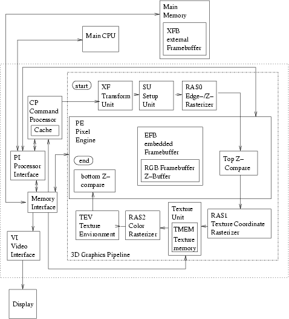

Yet Another Gamecube Documentation
8 3D Graphics Processing

8.1 basic operations
8.1.1 load BP Register
- write byte 0x61 to GXFIFO
- write 4 bytes of data to GXFIFO
8.1.2 load CP Register
- write byte 0x08 to GXFIFO
- write 1 byte address to GXFIFO
- write 4 bytes of data to GXFIFO
8.1.3 load XF Register
- write byte 0x10 to GXFIFO
- write 0x0000 (16 bit) to GXFIFO
- write addr (16 bit) to GXFIFO
- write 4 bytes of data to GXFIFO
8.1.4 load XF Register Indexed
- write byte 0x10 to GXFIFO
- write n-1 (16 bit) to GXFIFO
- write addr (16 bit) to GXFIFO
- write n bytes of data to GXFIFO
8.2 example processing loop
gx_init();
while(running)
{
gx_begin();
drawframe();
gx_end();
waitvsync();
}
gx_close();
- fifo start/end must be 32 byte aligned
- minimum fifo size is 64kb
- typical size for the hi watermark is fifo size - 16kb
while (mfwpar () & 1);
PI[3] = 0x100000;
PI[4] = 0x110000;
PI[5] = 0x100000;
mtwpar(0xC008000); // GXFIFO physical address
mtspr(920, mfspr(920) - 0x40000000);
after setting up and enabling gx command processing it is recommended
to send a first initial 'frame' to setup the various internal registers
to useful values.
8.2.1.3.1 Videomodes
remember that depending on the videomode some things must be setup
differently (such as the scissor, viewport, ...)
8.2.2 begin frame
8.2.3 draw frame
- load draw-done to BP register (0x45000002)
- copy EFB to XFB
- terminate the list by writing 32 zeroes
#define XY(x, y) (((y) < < 10) - (x))
GX_LOAD_BP_REG(0x4000001f); // set z mode
GX_LOAD_BP_REG(0x410004bc); // set color mode 0
GX_LOAD_BP_REG(0x49000000 - XY(0, 0)); // set source top left
GX_LOAD_BP_REG(0x4a000000 - XY(639, 479)); // set source bottom
right
GX_LOAD_BP_REG(0x4d000028); // stride? (0x1280> >5
... 640*2 ; 320*YuYv
GX_LOAD_BP_REG(0x4b000000 - (0xC00000 > > 5))
// xfb target address
GX_LOAD_BP_REG(PE_COPY_CLEAR_AR - 0x0000);
GX_LOAD_BP_REG(PE_COPY_CLEAR_GB - 0x0000);
GX_LOAD_BP_REG(PE_COPY_CLEAR_Z - 0xFFFFFF);
GX_LOAD_BP_REG(0x52004803); // do it (efb copy execution command?)
simelar to copying EFB to XFB, setup BP registers 0x4a,0x4a,0x4d,0x4b
and then (0x52000003|(format< <4))